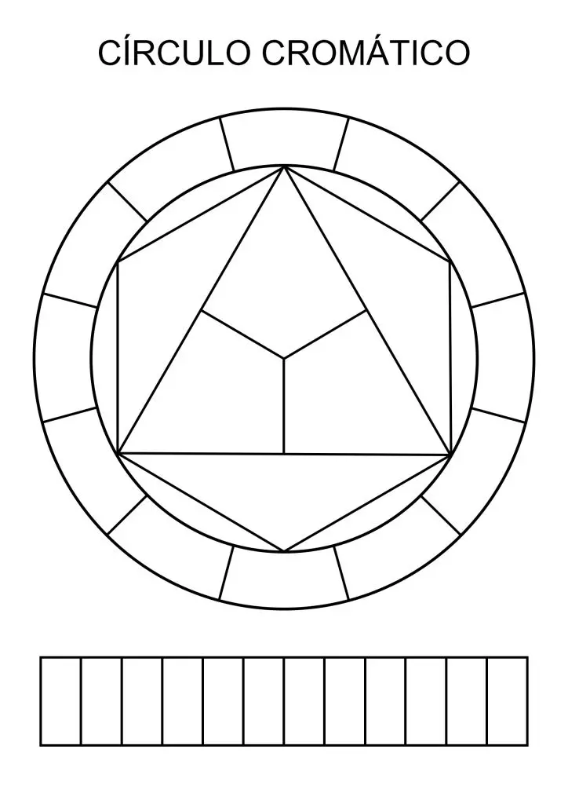
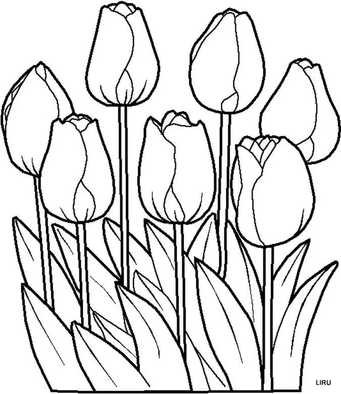
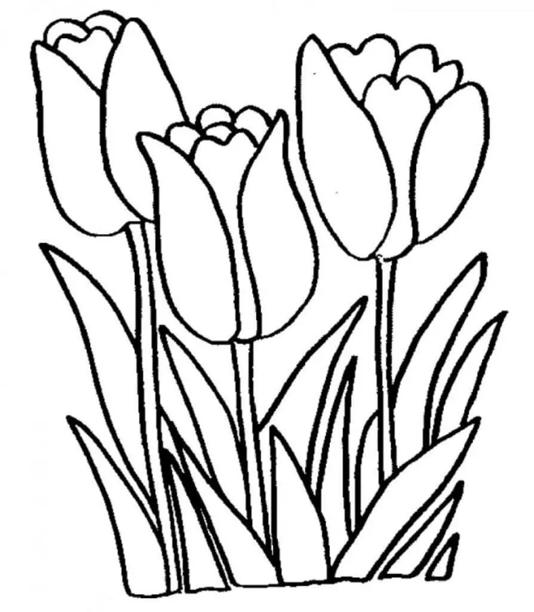

El circulo Cromático y su importancia
Realizar un círculo cromático con nuestra paleta de acuarelas es un muy buen ejercicio. No sólo para probar las mezclas de color que podemos obtener con nuestros pigmentos, sino también para tener un buen registro de ellos. Así podremos tener a mano nuestro círculo de colores, disponible en cualquier momento como una guía a la hora de empezar cualquier obra pictórica. Nos servirá también para elegir una buena paleta de color y así ver las posibilidades de combinanciones de colores que podremos elegir. Siempre es bueno hacer el ejercicio y colocar a cada color el nombre exacto de nuestro pomo o pastilla.
Como realizar un circulo cromático
Puedes descargar la plantilla haciendo click con el botón derecho
El triangulo central es para colocar en cada vertice los 3 colores primarios: cyan, magenta y amarillo. Si no tienes estos colores exactos, busca los que más se asemejen de tu papeta. Por ejemplo para el magenta puedes buscar un rojo de carmesí, carmín o un rosa fuerte. Los nombres pueden variar según la marca que utilises. Lo que debes hacer es buscar los que más se asemejen al color primario, para asegurarte mezclas más puras. Por ejemplo si el rojo que utilzas tiene algo de amarillo, al mezclarlo con cyan puede resultarte un tono marrón, en lugar de un violeta que es lo que buscamos. Cuando pintamos un círculo cromático comenzamos por los primarios, y luego continuamos mezclandolos cuidadosamente entre ellos, para llegar a los secundarios. Éstos irán colocados justo en el cuadrante central entre sus dos primarios, pasando por colores terciarios. Los colores secundarios son naranja (50%magenta y 50% amarillo), violeta (50% cyan y 50% magenta) y verde (50%amarillo y 50% cyan). Estos porcentajes deben ser visuales, no de proporción real en cuanto a la cantidad de pintura utilizada, es una cuestíon de percepción visual, en donde no debe predinar ninguno de los dos primarios. Un círculo cromático con colores primarios, secundarios y terciarios. Si alguno de los dos primarios, en la mezcla, es predominante, entonces el color es terciario. Los colores terciarios son los restantes colores en el círculo: Amarillo rojizo, rojo azulado, verde amarillento, verde azulado, cyan amarillento, cyan rojizo, magenta azulado, magenta amarillento y amarillo azulado.
Plantillas
Puedes descargar la plantilla haciendo click con el botón derecho
Puedes descargar la plantilla haciendo click con el botón derecho
Puedes descargar la plantilla haciendo click con el botón derecho
Puedes descargar la plantilla haciendo click con el botón derecho
Mariana Olivera
San Martin 3890
Concepcion-Tucumán